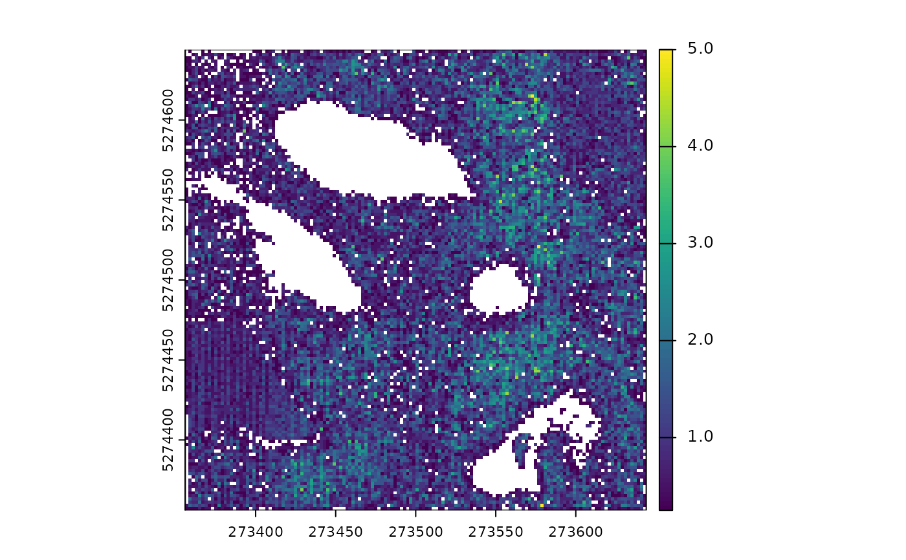

Rasterize a point cloud using different approaches. This stage does not modify the point cloud. It produces a derived product in raster format.
Usage
rasterize(res, operators = "max", filter = "", ofile = temptif(), ...)Arguments
- res
numeric. The resolution of the raster. Can be a vector with two resolutions. In this case it does not correspond to the x and y resolution but to a buffered rasterization. (see section 'Buffered' and examples)
- operators
Can be a character vector. "min", "max" and "count" are accepted as well as many others (see section 'Operators'). Can also rasterize a triangulation if the input is a LASRalgorithm for triangulation (see examples). Can also be a user-defined expression (see example and section 'Operators').
- filter
the 'filter' argument allows filtering of the point-cloud to work with points of interest. The available filters are those from LASlib and can be found by running filter_usage. For a given stage when a filter is applied, only the points that meet the criteria are processed. The most common strings are "-keep_first", "-keep_class 2", "drop_z_below 2". For more details see filters.
- ofile
character. Full outputs are always stored on disk. If
ofile = ""then the stage will not store the result on disk and will return nothing. It will however hold partial output results temporarily in memory. This is useful for stage that are only intermediate stage.- ...
default_valuenumeric. When rasterizing with an operator and a filter (e.g.-keep_z_above 2) some pixels that are covered by points may no longer contain any point that pass the filter criteria and are assigned NA. To differentiate NAs from non covered pixels and NAs from covered pixels without point that pass the filter, the later case can be assigned another value such as 0.
Value
This stage produces a raster. The path provided to `ofile` is expected to be `.tif` or any other format supported by GDAL.
Operators
If operators is a string or a vector of strings: read metric_engine to see the possible strings
Below are some examples of valid calls:
rasterize(10, c("max", "count", "i_mean", "z_p95"))
rasterize(10, c("z_max", "c_count", "intensity_mean", "p95"))
If operators is an R user-defined expression, the function should return either a vector of numbers
or a list containing atomic numbers. To assign a band name to the raster, the vector or the list
must be named accordingly. The following are valid operators:
Buffered
If the argument res is a vector with two numbers, the first number represents the resolution of
the output raster, and the second number represents the size of the windows used to compute the
metrics. This approach is called Buffered Area Based Approach (BABA).
In classical rasterization, the metrics are computed independently for each pixel. For example,
predicting a resource typically involves computing metrics with a 400 square meter pixel, resulting
in a raster with a resolution of 20 meters. It is not possible to achieve a finer granularity with
this method.
However, with buffered rasterization, it is possible to compute the raster at a resolution of 10
meters (i.e., computing metrics every 10 meters) while using 20 x 20 windows for metric computation.
In this case, the windows overlap, essentially creating a moving window effect.
This option does not apply when rasterizing a triangulation, and the second value is not considered
in this case.
Examples
f <- system.file("extdata", "Topography.las", package="lasR")
read <- reader_las()
tri <- triangulate(filter = keep_ground())
dtm <- rasterize(1, tri) # input is a triangulation stage
avgi <- rasterize(10, mean(Intensity)) # input is a user expression
chm <- rasterize(2, "max") # input is a character vector
pipeline <- read + tri + dtm + avgi + chm
ans <- exec(pipeline, on = f)
ans[[1]]
#> class : SpatRaster
#> dimensions : 286, 286, 1 (nrow, ncol, nlyr)
#> resolution : 1, 1 (x, y)
#> extent : 273357, 273643, 5274357, 5274643 (xmin, xmax, ymin, ymax)
#> coord. ref. : NAD83(CSRS) / MTM zone 7 (EPSG:2949)
#> source : file1ea93cfef135.tif
#> name : file1ea93cfef135
ans[[2]]
#> class : SpatRaster
#> dimensions : 30, 30, 1 (nrow, ncol, nlyr)
#> resolution : 10, 10 (x, y)
#> extent : 273350, 273650, 5274350, 5274650 (xmin, xmax, ymin, ymax)
#> coord. ref. : NAD83(CSRS) / MTM zone 7 (EPSG:2949)
#> source : file1ea91ee1c1a1.tif
#> name : file1ea91ee1c1a1
ans[[3]]
#> class : SpatRaster
#> dimensions : 144, 144, 1 (nrow, ncol, nlyr)
#> resolution : 2, 2 (x, y)
#> extent : 273356, 273644, 5274356, 5274644 (xmin, xmax, ymin, ymax)
#> coord. ref. : NAD83(CSRS) / MTM zone 7 (EPSG:2949)
#> source : file1ea93f02d73.tif
#> name : max
# Demonstration of buffered rasterization
# A good resolution for computing point density is 5 meters.
c0 <- rasterize(5, "count")
# Computing point density at too fine a resolution doesn't make sense since there is
# either zero or one point per pixel. Therefore, producing a point density raster with
# a 2 m resolution is not feasible with classical rasterization.
c1 <- rasterize(2, "count")
# Using a buffered approach, we can produce a raster with a 2-meter resolution where
# the metrics for each pixel are computed using a 5-meter window.
c2 <- rasterize(c(2,5), "count")
pipeline = read + c0 + c1 + c2
res <- exec(pipeline, on = f)
terra::plot(res[[1]]/25) # divide by 25 to get the density
terra::plot(res[[2]]/4) # divide by 4 to get the density

terra::plot(res[[3]]/25) # divide by 25 to get the density